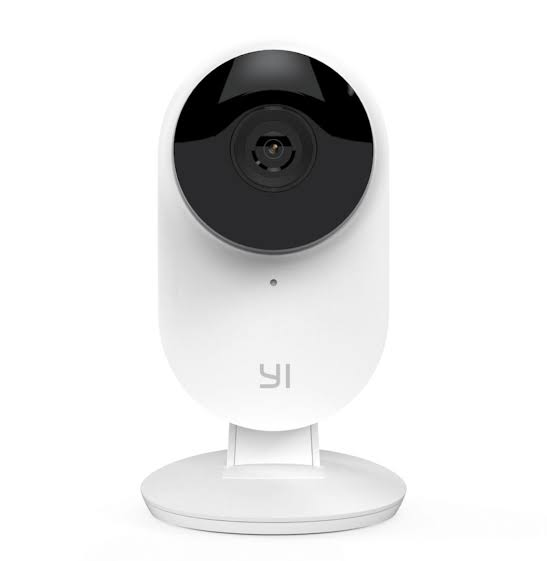

Nama Kelompok
Indri Sri Wahyuni 161113605
Stevi Stince L 161114139
Rina Yulianda 161110854
Hesty Sinaga 161113486
YI Home Camera

Yi Home Camera
Teknologi YI didirikan pada tahun 2014 dan berkantor pusat di Shanghai , Cina .
Pada 2018, YI Technology bermitra dengan Google untuk memproduksi YI Horizon VR180, kamera pasar VR180 pertama Google.
Teknologi YI, juga dikenal sebagai Xiaoyi ( Cina : 小 蚁 ) di pasar Cina Daratan, adalah perusahaan yang memproduksi kamera dan teknologi penglihatan komputer .
Yi Home Camera 3

Touch Interaction
Powered by bespoke-touch
Responsive Slides
Yi Home Camera 3 akan berfungsi kurang lebih seperti pendahulunya di mana ia akan dapat menangkap apa yang terjadi di rumah. Ini akan mampu menangkap kualitas video Full HD 1080p yang disimpan ke cloud. Itu juga akan dapat mendeteksi objek dan suara, namun seperti diketahui dengan AI beberapa hal yang tak penting akan dilewatkan. Hal yang tak penting, termasuk rangsangan yang berpotensi memicu deteksi objek atau suara, seperti serangga terbang, foto, hewan peliharaan berjalan di sekitar rumah, pergerakan sinar cahaya, dan sebagainya. Yi Home Camera 3 dibanderol dengan harga USD40 atau sekira Rp562 ribuan yang juga akan datang dengan langganan uji coba 6 bulan gratis ke layanan penyimpanan cloud.
Cara Mensetting Kamera Yi Home
- Smart camera yi ant tentunya
- Listrik <– pasti dong
- Bisa hp atau tab tablet atau gadget android atau iOS (salah satu)
- Wifi access point atau wifi router atau bahasa sederhananya pemancar wifi wireless
- Koneksi internet yang disambungkan ke router
- Aplikasi atau software yi home di gadget (hp, tab)
- Memory card tipe microSD (yang kecil), rekomendasi ukuran 32 gb dengan jenis class 10 atau kecepatan transfer data 40mb/s *untuk point 4 dan 5 jika tidak memiliki wifi router atau access point ap bisa menggunakan HP nya yang sudah diset sebagai router atau tethering
Syntax Highlighting
Powered by Lea Verou's Prism
(function() {
function hanoi(n, a, b, c) {
return n ? hanoi(n - 1, a, c, b)
.concat([[a, b]])
.concat(hanoi(n - 1, c, b, a)) : [];
}
return hanoi(3, 'left', 'right', 'mid')
.map(function(d) {
return d[0] + ' -> ' + d[1];
});
})();Named Route
Powered by bespoke-hash
Look up! This route has been named with a data-bespoke-hash attribute.
Just the beginning…
- Edit HTML markup in src/index.html
- Edit Stylus styles in src/styles/user.styl
- Edit JavaScript in src/scripts/main.js
- Enjoy! :) -@markdalgleish
Kelebihan Kamera YI Home
- Harga yang terjangkau.
- Adanya pengawasan saat malam hari.
- Pendeteksi gerakan secara otomatis.
- Lensa yang cukup luas, pada kamera YI lensa yang cukup luas dimilikinya.
- Dapat dipindahkan atau pun dibawa.